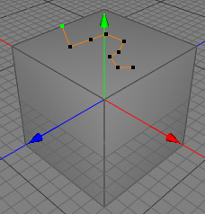
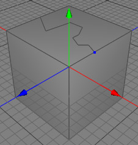
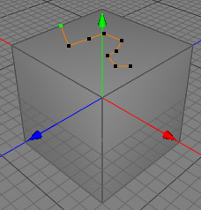
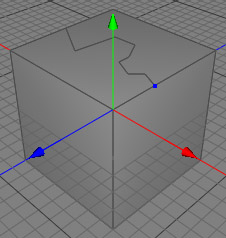

Scalpel Tool
The scalpel tool is a very powerful tool for editing polygon meshes. It can be used to cut arbitrarily from one edge/point to another edge/point.
  
 
Modes
The scalpel tool can only be applied to raw polygon objects. It's available in point, edge and polygon mode.


For every cut you need a starting point and an ending point. To choose your starting point, click on an edge or point. If you've selected a point it will be displayed blue. If you've hit a edge it will be displayed green. Now you can arbitrarily cut with as many points as you want through the polygon. To finalize the operation select a second point or edge of the same polygon. Now the polygon will be divided into two polygons with the cut going from the first to the last point. (see the images above)
The end point of the current cut will now be automatically chosen as the starting point for the next cut.
Keys
- ESC: Use the ESC key to reset the tool.
Properties
- none